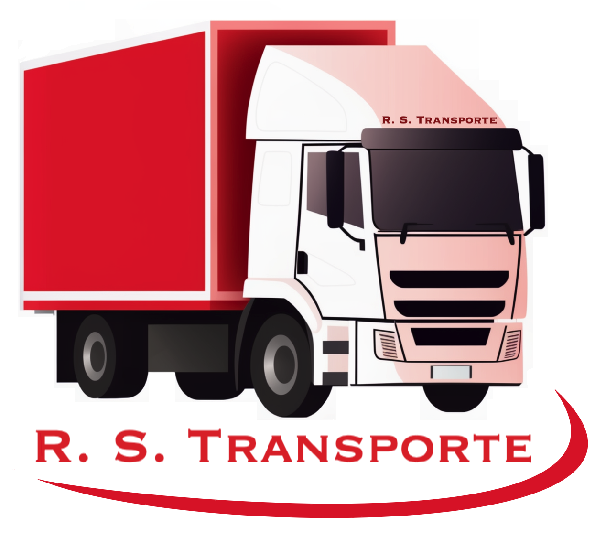
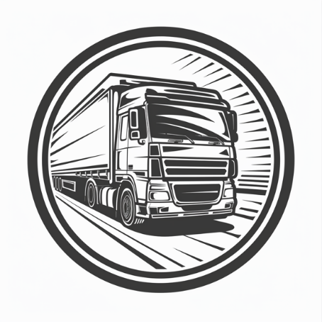
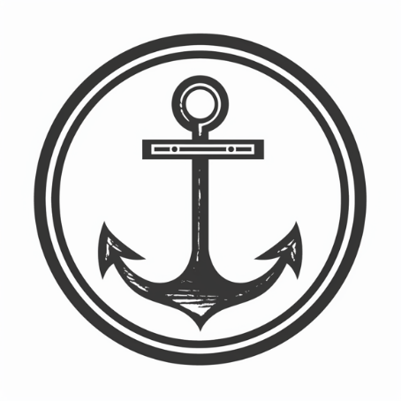
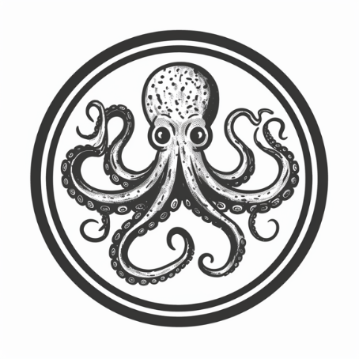
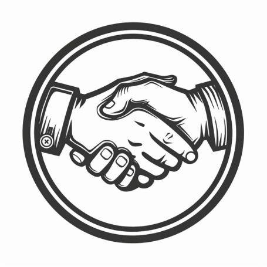
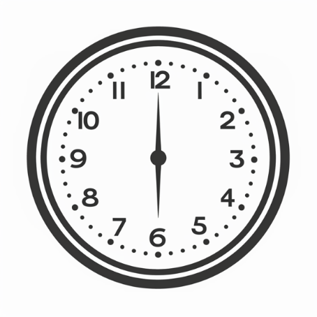

Firmenumzug
Ein Firmenumzug erfordert präzise Planung und professionelle Durchführung, um Ausfallzeiten zu minimieren und den Geschäftsbetrieb schnell wiederaufzunehmen.

RS TransporteIhr zuverlässiger Transportpartner
Weil Ihr Transport gut geplant sein muss. Wir sorgen für termingerechte Lieferungen in Österreich und international.
Wir freuen uns seit 25 Jahren Ihr verlässlicher Partner für Transportlösungen aller Art in Wien und darüber hinaus zu sein.
Seit unserer Gründung im Jahr 1999 haben wir uns weiterentwickelt und sind stolz darauf, uns zu einem der wichtigsten und vertrauenswürdigsten Akteure in der Transportbranche etabliert zu haben.
Wir bieten eine breite Palette von Transportlösungen im In- und Ausland: Räumungen, Entrümpelungen, Privat- und Firmenübersiedlungen, Einlagerungen, Expresslieferungen, Kunsttransporte, Deponiefahrten und Ladehilfen für effiziente Transporte.
Von Firmen- und Privatumzügen über Kunst- und Sondertransporte bis zur sicheren Lagerung: R.S. Transporte bietet professionelle Unterstützung für jeden Bedarf.
Ein Firmenumzug erfordert präzise Planung und professionelle Durchführung, um Ausfallzeiten zu minimieren und den Geschäftsbetrieb schnell wiederaufzunehmen.
Ein Privatumzug kann stressig sein. Wir übernehmen Planung, Verpackung, Transport und Aufbau für eine entspannte Übersiedlung.
R.S. Transporte bietet umfassende Transportdienstleistungen für Güter aller Art mit zuverlässiger Zustellung und flexibler Disposition.
Der sensible Transport von Kunstwerken erfordert Fachkenntnis und Sorgfalt – wir schützen Ihre wertvollen Objekte während des gesamten Transports.
Wir bieten diskrete Entrümpelung und Räumung für Privat- und Gewerbeimmobilien inklusive umweltgerechter Entsorgung.
Unsere Lagerräume sind gut gesichert, trocken und überwacht – ideal für kurz- und langfristige Einlagerungen.
R.S. Transporte wurde 1999 gegründet und vereint seither umfassende Logistikkompetenz mit persönlicher Betreuung. Unsere Kunden schätzen Verlässlichkeit, Flexibilität und die hohe Sorgfalt bei jedem Auftrag.
Als regionaler Partner in Wien und internationaler Dienstleister bieten wir maßgeschneiderte Lösungen für Transporte, Umsiedlungen und Lagerdienstleistungen.
Unser Team arbeitet für Sie mit großem Engagement, hoher Sicherheit und flexiblen Abläufen – damit Ihre Transporte stets reibungslos und termingerecht ankommen.
Professionalität

Dynamik

Zuverlässigkeit
Erfahrung

Flexibilität

Kundennähe

Pünktlichkeit
Kosteneffizienz
„R.S. Transporte ist ein 100% verlässlicher Partner, wenn es um Transporte jeglicher Art geht. Wir arbeiten seit Jahren mit R.S. Transporte zusammen - das Team ist schnell, sympathisch und arbeitet in einem hohen Maß an Qualität.“
„Das Team rund um R.S. Transporte zeichnet sich durch hohe Kompetenz und Freundlichkeit aus, jede Anfrage wird äußerst schnell und lösungsorientiert bearbeitet, die Arbeiten werden immer professionell und rasch erledigt und dazu kommt noch ein hervorragendes Preis-Leistungs-Verhältnis.“
„RS Transporte ist ein langjähriger und verlässlicher Partner. Stets flexibel und äußerst kundenorientiert haben die kompetenten Mitarbeiter von RS Transporte alle unsere Projekte zu 100% zur vollsten Zufriedenheit erfüllt. Wir sind froh uns jederzeit auf unseren Partner RS Transporte verlassen zu können!“
„Wir möchten uns bei Robert Székely und seinem großartigen Team herzlich für die gute Zusammenarbeit der letzten Jahre bedanken. Wir sind seit über einem Jahrzehnt Kunden des Unternehmens, und Herr Székely macht das Unmögliche möglich und hat uns schon bei vielen Transporten, auch sehr kurzfristig angesetzten, unterstützt. Wir freuen uns auf viele weitere Jahre der Zusammenarbeit!“
„Das Team von R.S. Transporte kenne ich bereits seit 2006. In verschiedenen Organisationen haben mich die Professionalität, Flexibilität, und das hervorragende Preis-Leistungs-Verhältnis des Unternehmens immer wieder überzeugt! Auch in meinem persönlichen Bereich habe ich mehrmals die Leistungen der Firma R.S. Transporte in Anspruch genommen.“
„Herr Szekely ist sehr lösungsorientiert und immer bereit, rasch zu helfen. Seine freundlichen Mitarbeiter sind kompetent und sehr sorgfältig. Eine tolle Zusammenarbeit seit vielen Jahren!“
„Wir vertrauen nun schon seit vielen Jahren auf das kompetente Team von RS Transporte und werden das auch weiterhin tun. Super Preis-Leistungs-Verhältnis, absolute Verlässlichkeit und Flexibilität - eine klare Empfehlung!“
„Seit Jahren beauftragen wir für Möbellieferungen an unsere Kundinnen und Kunden sehr gerne R.S. Transporte und schätzen besonders deren hervorragende Verlässlichkeit, promptes Reagieren, reibungslose Kommunikation und ein gutes Preis-Leistungs-Verhältnis. Zu empfehlen!“
„R. S. Transporte wickelt seit Jahren meine exklusiven Möbeltransporte professionell und zuverlässigst ab. TOP Team - danke !!!“
„Seit mehr als 15 Jahren unser Speditionspartner des Vertrauens! Zuverlässig, kompetent und oft auch zeitlich spontan flexibel.“
„Firma R.S. Transporte liefert für uns sämtliche Küchen aus nach Terminwunsch. Übersiedelungen von kompletten Wohnungen inkl. verpacken und vertragen wurden zur besten Zufriedenheit erledigt. Wir können dieses Unternehmen nur weiterempfehlen!“
„Zuverlässigkeit, Flexibilität & Freundlichkeit“
„Für uns als Kunstgalerie sind Terminsicherheit sowie der sensible Umgang mit der Transportware extrem wichtig. Gerade deshalb schätzen wir die ebenso lösungsorientierte wie kundenfreundliche Zusammenarbeit mit der Firma Szekely schon seit geraumer Zeit.“
„Kommunikation - top, Umsetzung - top. Mit R.S. Transporte fahren wir immer und in allen Fällen auf der sicheren Seite. Und die Zusammenarbeit könnte nicht besser sein. Tausend Dank dem genialen Team!“
„Verlässlich, flexibel und dabei auch noch preiswert - RS Transport wird von der Galerie Amart uneingeschränkt empfohlen. Buchen Sie RS Transporte - und Sie brauchen nie wieder eine andere Spedition.“
„Seit vielen Jahren transportieren wir als Restaurator*innen mit Robert Szekely und seinem Team Gemälde und Skulpturen mit unterschiedlichsten Formaten. Die Transporte reichen von Bezirk zu Bezirk in Wien bis zu mehreren hundert Kilometern Entfernung in die Bundesländer. Wir haben RS Transporte schon vielfach und erfolgreich an unsere Kolleg*innen weiterempfohlen. Wir bedanken uns für die außerordentliche Zuverlässigkeit und den sorgsamen Umgang mit den Objekten. Zudem erfreuen wir uns an der angenehmen Zusammenarbeit und wünschen uns noch viele gemeinsame Arbeitseinsätze.“
„Schon seit dem vorigen Jahrtausend arbeite ich mit meinen Unternehmen mit RS zusammen. Im Herbst 1999 hat Herr Szekely mit seinem Team die alte Apotheke zum Weinberg geräumt. Unzählige Transporte und fast ein Vierteljahrhundert (!) später jetzt im Dezember 2023 für uns wieder eine mehrtägige Übersiedlung gemanagt. Schon viele Male habe ich RS als besonders zuverlässigen, kompetenten und sympathischen Speditionspartner besten Gewissens weiterempfohlen. Das wird auch so bleiben.“
„Wir arbeiten seit über 12 Jahren mit der Firma zusammen und sind sehr zufrieden mit der Flexibilität, sowie der Zuverlässigkeit des Unternehmens. Die Mitarbeiter sind freundlich, motiviert und kommunikativ. Die Aufträge werden auch unter schwierigen Bedingungen immer zu unserer vollsten Zufriedenheit erledigt.“
„R.S. Transporte ist seit Jahren ein zuverlässiger Partner von Galerie und Kunsthandel Artziwna in der Wiener Innenstadt. Alle Transportaufträge wurden stets zu unserer Zufriedenheit abgewickelt. Besonders schätzen wir die Verfügbarkeit und Flexibilität bei kurzfristigen Einsätzen. Weiters überzeugt die Firma R.S. Transporte mit einem hervorragenden Preis-Leistungs-Verhältnis.“
„Robert Szekely und seine Firma 'R.S. Transport' ist für uns seit sehr vielen Jahren ein verlässlicher Partner. Sein Unternehmen zeichnet sich durch sehr motivierte, freundliche, kompetente und immer pünktliche Mitarbeiter aus, die unsere Erwartungen bei Transporten von sehr hochwertigen und empfindlichen High-End Audio/Video Komponenten bei weitem übertroffen haben.“
„Das Team der Spedition Robert Szekely R.S. Transporte wickelt seit vielen Jahren unsere Küchen- und Gerätelieferungen mit großer Sorgfalt und Verlässlichkeit durch. Für diese kundenorientierte Professionalität bedanken wir uns.“
Unsere Kompetenz wie auch unser hoher Qualitäts- und Leistungsanspruch werden durch unsere Zertifikate untermauert.
Wir sind sehr stolz darauf, mehrere Auszeichnungen zur erfolgreichen Unternehmensführung von der WKO zu besitzen.
Diese Zertifikate belegen unsere Verpflichtung zu höchsten Standards in Bezug auf Qualität, Management und Sicherheit.
Rufen Sie uns an oder schreiben Sie eine Nachricht. Wir melden uns umgehend.
Wir unterstützen Sie bei Umzügen, Transporten, Entrümpelung und Lagerung in Österreich und international.